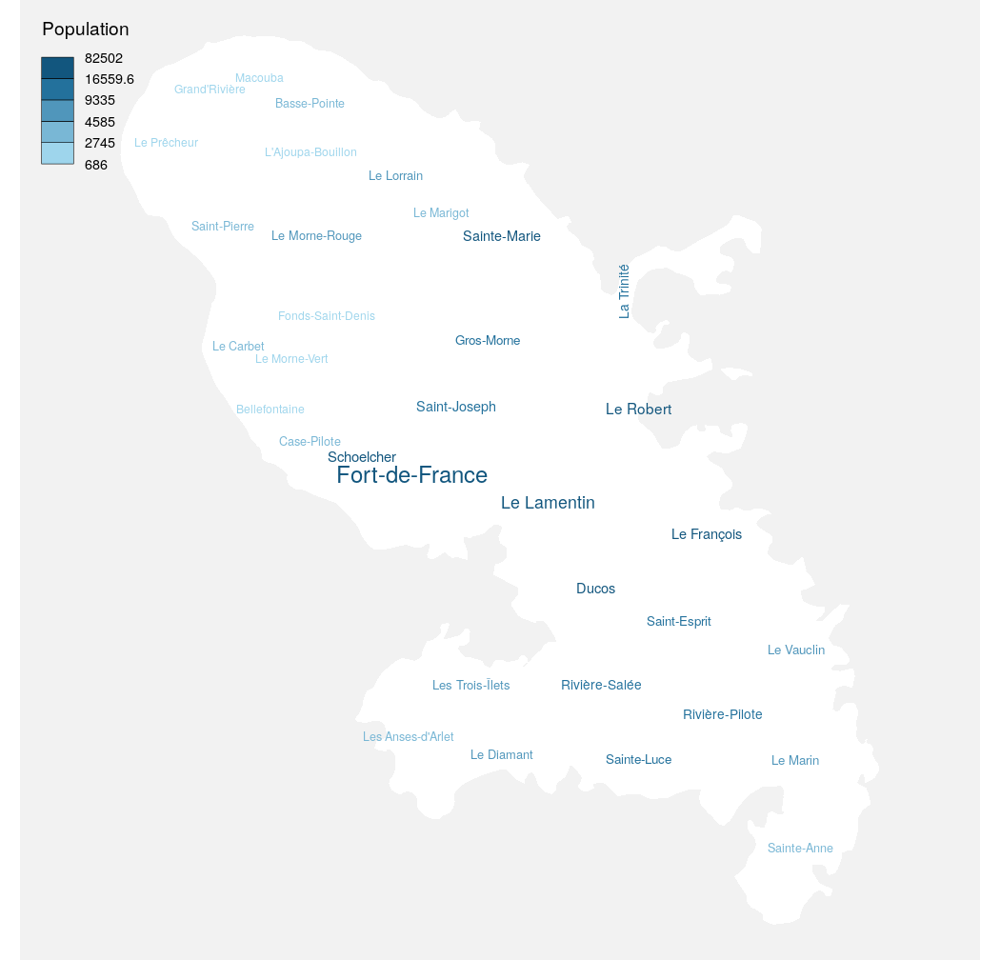

Plot a word cloud adjusted to an sf object.
wordcloudLayer( x, txt, freq, max.words = NULL, cex.maxmin = c(1, 0.5), rot.per = 0.1, col = NULL, fittopol = FALSE, use.rank = FALSE, add = FALSE, breaks = NULL, method = "quantile", nclass = NULL )
| x | an sf object, a simple feature collection (POLYGON or MULTIPOLYGON). |
|---|---|
| txt | labels variable. |
| freq | frequencies of |
| max.words | Maximum number of words to be plotted. least frequent terms dropped |
| cex.maxmin | integer (for same size in all |
| rot.per | proportion words with 90 degree rotation |
| col | color or vector of colors words from least to most frequent |
| fittopol | logical. If true would override |
| use.rank | logical. If true rank of frequencies is used instead of real frequencies. |
| add | whether to add the layer to an existing plot (TRUE) or not (FALSE) |
| breaks, method, nclass | additional arguments for adjusting the colors of |
Ian Fellows (2018). wordcloud: Word Clouds.
R package version 2.6. https://CRAN.R-project.org/package=wordcloud
#> Reading layer `mtq' from data source `/tmp/RtmpfMP0Eo/temp_libpath527a79870990/cartography/gpkg/mtq.gpkg' using driver `GPKG' #> Simple feature collection with 34 features and 7 fields #> geometry type: MULTIPOLYGON #> dimension: XY #> bbox: xmin: 690574 ymin: 1592536 xmax: 735940.2 ymax: 1645660 #> projected CRS: WGS 84 / UTM zone 20NwordcloudLayer( x = mtq, txt = "LIBGEO", freq = "POP", add = TRUE, nclass = 5 )legendChoro( title.txt = "Population", breaks = getBreaks(mtq$POP, nclass = 5, method = "quantile"), col = carto.pal("blue.pal", 5), nodata = FALSE )